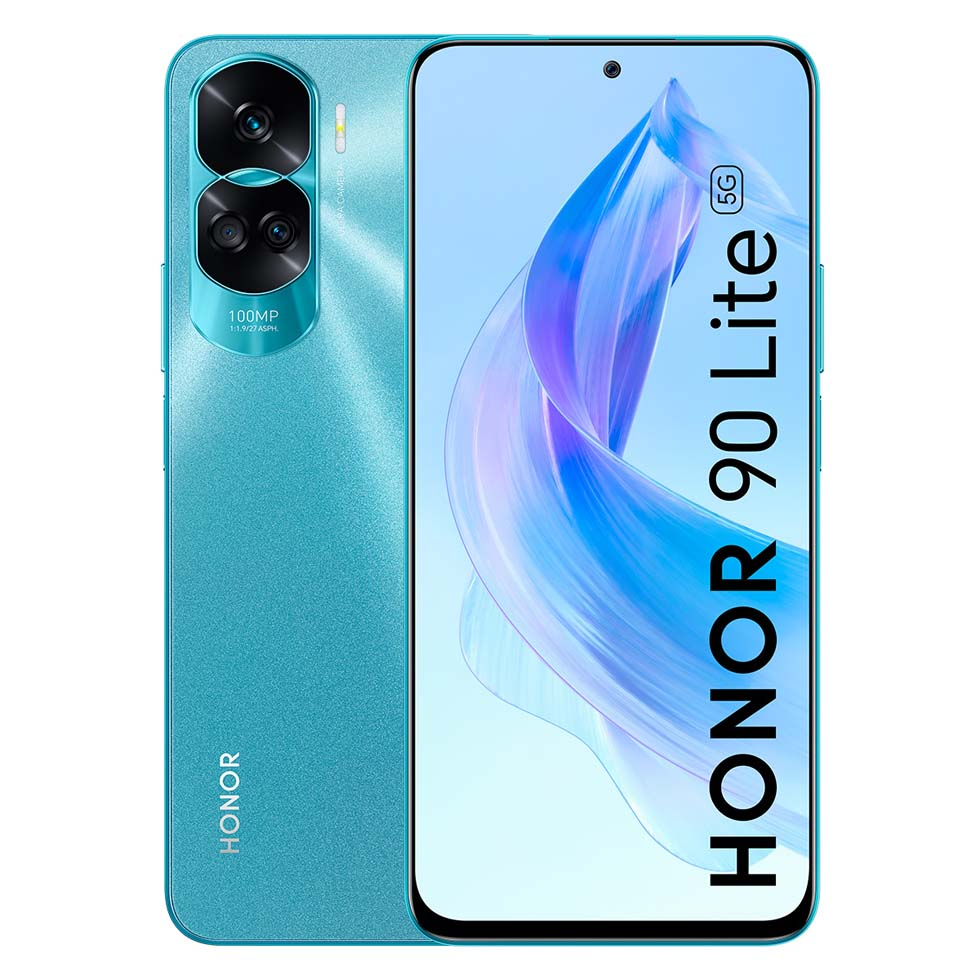
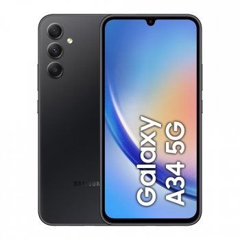
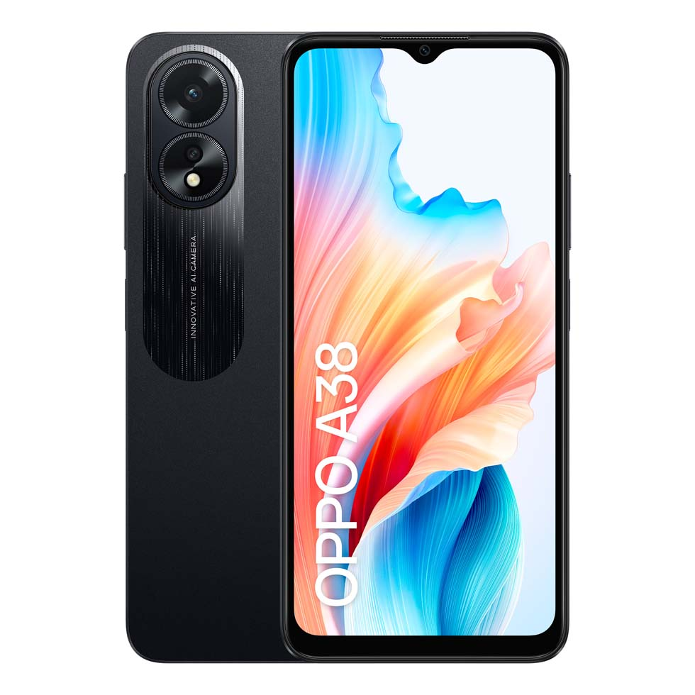

El HONOR 90 Lite es un teléfono inteligente de gama media que ofrece un equilibrio entre rendimiento y precio. Con características como una pantalla de alta resolución, un conjunto versátil de cámaras y una batería de larga duración, el HONOR 90 Lite es ideal para usuarios que buscan un dispositivo confiable para tareas diarias como navegar por la web, tomar fotos y videos, y usar aplicaciones populares.
Fecha de Publicación: 2024-01-23
El SAMSUNG GALAXY A34 5G es un teléfono móvil de gama media con capacidades 5G. Destaca por su pantalla de alta calidad, su sistema de cámaras versátil y su diseño elegante. Además de ofrecer velocidades de datos ultrarrápidas, el GALAXY A34 5G es ideal para aquellos que desean disfrutar de juegos y streaming de video de alta definición mientras están en movimiento.
Fecha de Publicación: 2024-03-12
El OPPO A38 es un teléfono inteligente asequible con características esenciales y un diseño moderno. Con un rendimiento sólido, una pantalla nítida y una batería de larga duración, el OPPO A38 es una excelente opción para usuarios que buscan un dispositivo básico pero eficiente para realizar llamadas, enviar mensajes, usar redes sociales y realizar tareas ligeras en línea.
Fecha de Publicación: 2024-05-01
